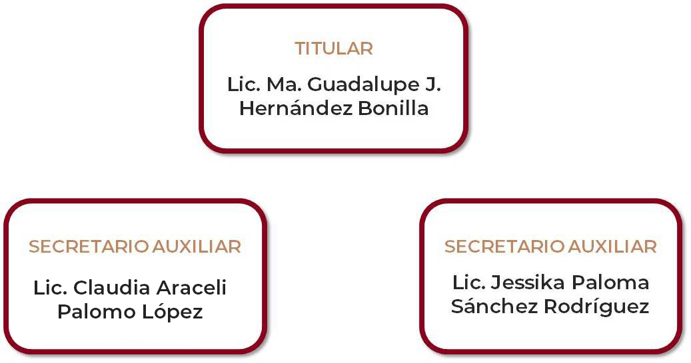
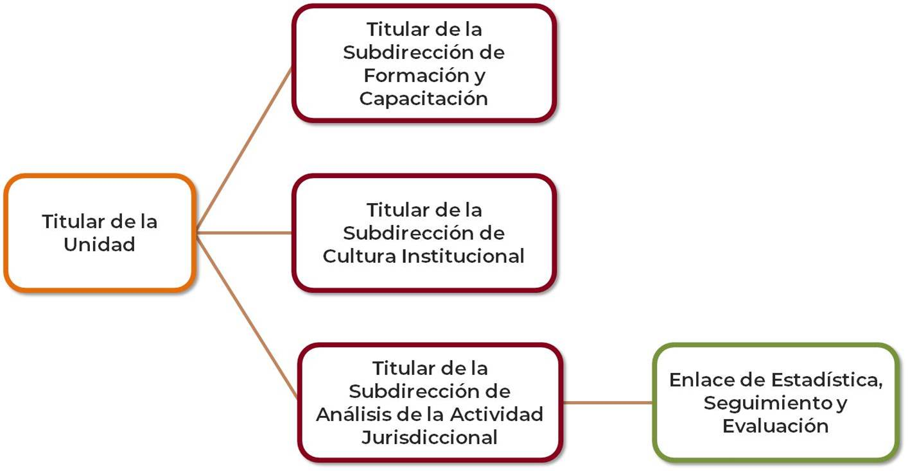

Unidad de Derechos Humanos e Igualdad de Género
Millones de mujeres en el mundo y otros grupos son víctimas de discriminación ya sea por su género, su orientación sexual, su edad, entre otras razones. A pesar de que las legislaciones nacionales e internacionales protejan y establezcan el principio de igualdad y de no discriminación como un derecho humano fundamental, lo cierto es que hay muchos aspectos de la realidad política y social que los relegan y les impiden el goce de estas libertades.Las cifras de violencia contra las mujeres y otros delitos relacionados con la condición de género de las personas, así como las innumerables desigualdades que sufren a diario mujeres y otros grupos por género, edad, origen étnico, orientación sexual, entre otras discriminaciones, permite observar que en las violaciones de los derechos humanos el impacto varía de acuerdo al sexo de la víctima.El principio de igualdad jurídica entre mujeres y hombres que establece la Constitución Política de los Estados Unidos Mexicanos y otras legislaciones y tratados internacionales, no ha sido suficiente para erradicar las desigualdades en el acceso a la justicia que tienen las mujeres y otros grupos por razón de género.Es determinante que los operadores de justicia garanticen el respeto a los derechos de todas las personas. La estructura, la organización y las políticas judiciales requieren, para brindar un servicio adecuado y cumplir con su función, contar con un enfoque integral y transversal en género que permita analizar los casos y garantizar el acceso a la justicia y al debido proceso, tomando en consideración estas particularidades y vulnerabilidades que por razón de género se presentan en la sociedad.
Es en esta dimensión que el derecho se vuelve factor indispensable para cambiar el rumbo de la historia y lograr un mundo más justo. Como parte de los mecanismos para reducir las desigualdades, los aparatos jurisdiccionales deben ser un medio eficaz de acceso a la justicia para las poblaciones invisibilizadas y excluidas históricamente.
El reconocimiento de la situación descrita llevó a los Presidentes de Cortes Supremas y Tribunales Supremos de Justicia a adoptar en noviembre de 2002, durante la celebración de su VII Cumbre Iberoamericana realizada en Cancún, México, la “Declaración de Cancún”, instrumento que en el apartado denominado «Acceso de las Mujeres a la Justicia» reconoce la importancia de que las altas jerarquías del aparato judicial adopten una política de igualdad de género, comprometiéndose, entre otras cosas, a propiciar la creación de una Unidad permanente que apoye a los órganos de más alta jerarquía en la implantación de la política con acciones dentro de un sistema integral, a fin de coordinarlo, impulsarlo, monitorearlo y evaluarlo, pues es ineludible la obligación del Estado mexicano de crear conciencia en todo su personal y actuar con base en el respeto a los derechos humanos, siendo necesario contar con estructuras que garanticen un enfoque integral, transversal y con perspectiva de derechos humanos e igualdad de género.
Por estas razones, se estableció como política general en el Poder Judicial del Estado de Coahuila de Zaragoza, y como uno de los Ejes Rectores del Plan Integral de Desarrollo y Fortalecimiento 2016-2020, el absoluto respeto y garantía de los derechos humanos de todas y todos, así como una visión de igualdad de género al interior de los órganos jurisdiccionales y no jurisdiccionales que lo conforman, creándose por Acuerdo C-187/2017, emitido en sesión celebrada por el Consejo de la Judicatura del Estado el 13 de junio de 2017, la Unidad de Derechos Humanos e Igualdad de Género del Poder Judicial del Estado de Coahuila de Zaragoza como órgano auxiliar de la Presidencia del Tribunal Superior de Justicia, e iniciando sus funciones a partir del 01 de julio de 2017.
Integración

Misión
Ser la instancia rectora que crea, fomenta y ejecuta políticas públicas de derechos humanos con perspectiva de género, para garantizar el acceso real y efectivo a la justicia para todas las personas en igualdad de condiciones; así como introducir mecanismos para la transversalización e institucionalización de los derechos humanos y la perspectiva de género en el ambiente laboral de la institución.
Visión
Ser la instancia que fomenta nuevas relaciones entre mujeres y hombres en el marco de los derechos humanos en la impartición de justicia, y que transforma los procesos internos de la institución permitiendo eliminar toda forma de discriminación entre las personas.
Objetivo General
La Unidad de Derechos Humanos e Igualdad de Género tiene como objetivo general promover la aplicación de los derechos humanos con una perspectiva de género que incida de manera transversal e institucional en la impartición y administración de justicia, así como en el diseño y la instrumentación de los programas que se implementen a fin de que en las resoluciones emitidas por el Poder Judicial y a su interior permee la dignidad humana como eje rector de la actuación judicial.
Objetivos Específicos
- Promover la eliminación de prácticas discriminatorias y garantizar un enfoque integral, transversal y con perspectiva de derechos humanos e igualdad de género en el quehacer de los integrantes del poder judicial.
- Impulsar herramientas, así como generar criterios de interpretación jurídica que permitan mejorar el nivel de incidencia de la transversalización e institucionalización de los derechos humanos y la perspectiva de género en la impartición de justicia.
- Impulsar que se generen ambientes laborales libres de violencia.
- Promover la igualdad de oportunidades entre mujeres y hombres en el Poder Judicial del Estado, en todas sus áreas y funciones.
- Impulsar que el personal del Poder Judicial, con base en el respeto a los derechos humanos, aplique la perspectiva de género en su trabajo cotidiano.
Estructura Orgánica
